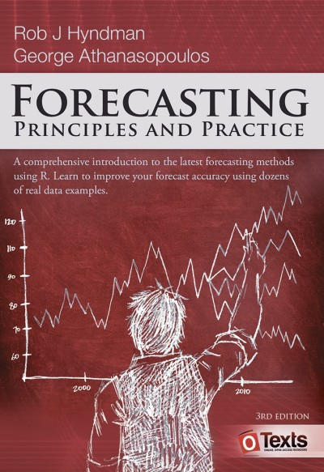

MATH840 | Time Series | 2026/2027
Kyiv School of Economics
Eighteen students. One shared dataset: electricity consumption, recorded every 15 minutes.
The task: forecast the next 48 hours — 192 steps ahead — with 95% prediction intervals.
Any method from the course was allowed. They had a trimester of ARIMA, ETS and neural networks behind them.
One extra submission was entered alongside theirs, under the name ----SNAIVE----.
It was a seasonal naive forecast: “next Tuesday at 14:15 will look like last Tuesday at 14:15.” Four lines of code. No model. No fitting.
| Rank | Submission | RMSE | MAPE |
|---|---|---|---|
| 1 | Student A | 5.43 | 12.5% |
| 2 | Student B | 6.03 | 13.7% |
| 3 | Student C | 6.97 | 15.0% |
| 4 | Student D | 8.26 | 17.2% |
| 5 | ----SNAIVE---- |
8.75 | 20.7% |
| 6 | Student E | 10.92 | 27.5% |
| 7 | Student F | 11.36 | 28.5% |
| … | … | … | … |
| 18 | Student Q | 22.64 | 51.1% |
| 19 | Student R | 30.44 | 74.8% |
Nobody there was lazy. They did the natural thing: reached for the most sophisticated tool they had and trusted it.
Sophistication is not accuracy. Everything about how this course is run in 2026/27 follows from that one sentence.
In industry, a forecast is produced against a deadline and judged against a benchmark. Nobody asks whether your model is interesting. They ask whether it beats what they already had.
So this course reproduces those two conditions on purpose:
The course ends with a project on a shared dataset, run the same way — and defended in front of the group.
If you heard about MATH840 from last year’s students, update your model of it:
| 2025/26 | 2026/27 | |
|---|---|---|
| Assignments | Homework, submitted later | Produced and submitted in class |
| Datasets | Same for everyone | Your own series, from Week 4 |
| Accuracy | Not graded until the project | Graded from Week 4, against a benchmark |
| Late work | −20%/day, 3 days max | No late scheme — see absence provisions |
| Defences | For weekly work | Only for the final project |
| Mid-term quiz | Separate | Week 5 practice slot |
| Grade ceiling | 105 | 100, participation on top |
| Task | Count | Points each | Total |
|---|---|---|---|
| Weekly assignments | 7 | 8 | 56 |
| Mid-term quiz | 1 | 12 | 12 |
| Final project | 1 | 32 | 32 |
| Total | 100 | ||
| Participation (extra) | +5 |
Passing the final project is mandatory. Without it, no combination of other marks produces a pass.
Named, domain-rich datasets: vic_elec, aus_retail, pedestrian, PBS, tourism. The domain is visible and the history means something. You each get your own, assigned deterministically — but the task is identical for everyone.
These labs are not competitive. At this point in the course there is no forecasting method and no accuracy metric to compete on.
| Criteria | Points |
|---|---|
| Data preparation | 1 |
| EDA and visualisation | 4 |
| Implementation | 2 |
| Code quality and reproducibility | 1 |
| Total | 8 |
In Week 4 you are assigned one time series, which stays yours for the rest of the course.
Because every student has a different series, discussing methods with each other cannot become copying a result. That discussion is encouraged, and it earns participation points.
| Criteria | Points |
|---|---|
| Forecast accuracy vs your benchmark | 3 |
| Justification block | 3 |
| EDA and visualisation | 1 |
| Code quality and reproducibility | 1 |
| Total | 8 |
The accuracy points are thresholds, not a ranking:
You are never graded against your classmates in a weekly lab. Only in the final project, where everyone forecasts the same data.
Every series you can be assigned is one that is known to be beatable.
If you do not beat it, that is a fact about your model, not about your luck.
An 80-minute slot is not enough to specify an ARIMA model by hand, justify it, and package a forecast. So each challenge has two deadlines:
The automated score is published the next morning. Rubric marks and comments come back before the next practice session, so there is always time to act on them.
Three short fixed questions, specific to the week’s topic. Worth 3 of 8 points — more than the accuracy itself.
From Week 6 the task is structured so that you must specify the model manually first and justify that specification from the evidence — ACF/PACF, differencing, seasonality — and only then compare it against automatic selection and explain any divergence.
Automatic selection cannot be your first step.
It is marked by hand, and you may be asked follow-up questions about it in the next session.
One proctored quiz, taken electronically on Moodle in the Week 5 practice slot.
Covers Chapters 1–3, 5 and 8 — everything completed before it.
Worth 12 points.
You act as a data scientist for an energy utility. Everyone works with the same 15-minute consumption dataset. You do not choose your own.
| Criteria | Points |
|---|---|
| Valid in-class submission, correct format, on time | 5 |
| Beating the benchmark in class | 8 |
| Final skill score (ranked against the class) | 5 |
| EDA, methodology and diagnostics — residual analysis is required | 8 |
| Code quality and reproducibility — must run without errors | 2 |
| Defence and presentation | 4 |
Those 5 ranked points are awarded on your absolute final accuracy, not on how much you improved. Two gates: an in-class submission must exist, and your final result must be no worse than it.
All coursework is produced in class, so absence has a direct cost. These provisions exist so that circumstances outside your control do not decide your grade.
| Situation | Provision |
|---|---|
| Missed weekly lab | Asynchronous replacement: same dataset, deadline 24h later, capped at 6 of 8 points. Twice per trimester without documentation. |
| Air raid alert > 10 min | The session converts to asynchronous mode for the whole group. No penalty, no cap. |
| Missed Week 10 challenge | Supervised make-up within a week on documented grounds. Base points in full; the ranking bonus is not awarded. |
| Air raid during Week 10 | Rescheduled in full for the whole group. This session gates passing the course. |
AI should not reduce your ability to think clearly. ✅ assistant — ❌ decision-maker.
The minimum penalty for cheating or plagiarism on any task, presentation or project is zero for that work, plus a reduction of the final course grade by at least one letter. Repeat violations can lead to dismissal from KSE.
Every student has a different series. Talking about methods is encouraged and rewarded. Handing over results is not one of the things that is hard to detect.
This is a required component, not optional reading.
| Activity | Hours |
|---|---|
| Pre-reading the assigned chapter before each lecture | ~35 |
| Final project — improvement between Week 10 sessions | 20 |
| Final project — report and slides | 15 |
| Mid-term quiz preparation | 10 |
The in-class format assumes you arrive already familiar with the week’s method. 80 minutes is enough to apply a method you have read about, and nowhere near enough to learn one from scratch.
Forecasting: Principles and Practice

Time Series Forecasting Using Foundation Models
Week 9.
Python. The course is taught in pandas, statsmodels and the Nixtla stack — statsforecast, mlforecast, neuralforecast.
.qmd or .ipynb). The PDF is what gets read; the source is what makes it reproducible.In Week 9 you will take a foundation model — a network trained on millions of time series, which has never seen yours — and run it on your series with zero training.
Then you will compare it against the model you built by hand over seven weeks.
Sometimes it wins. Sometimes it loses badly. Either way you will be able to explain why, and that explanation is the whole point of the course.
See you in Week 4, when you get your series.